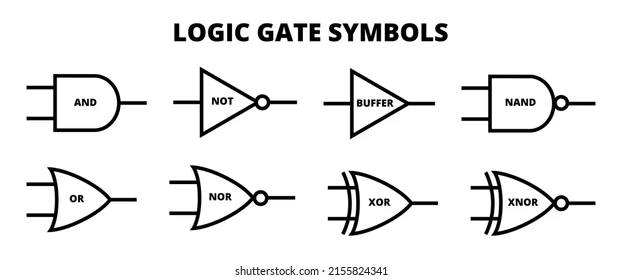
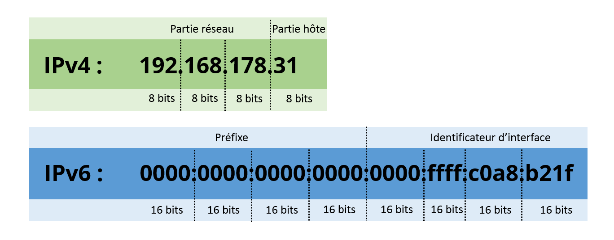
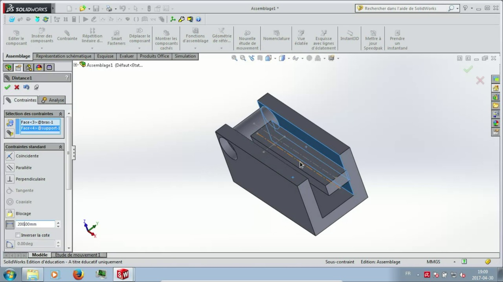
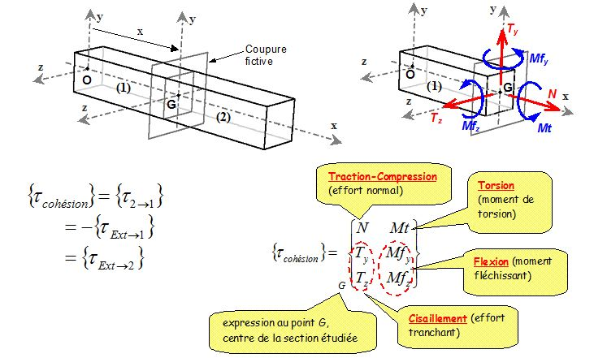
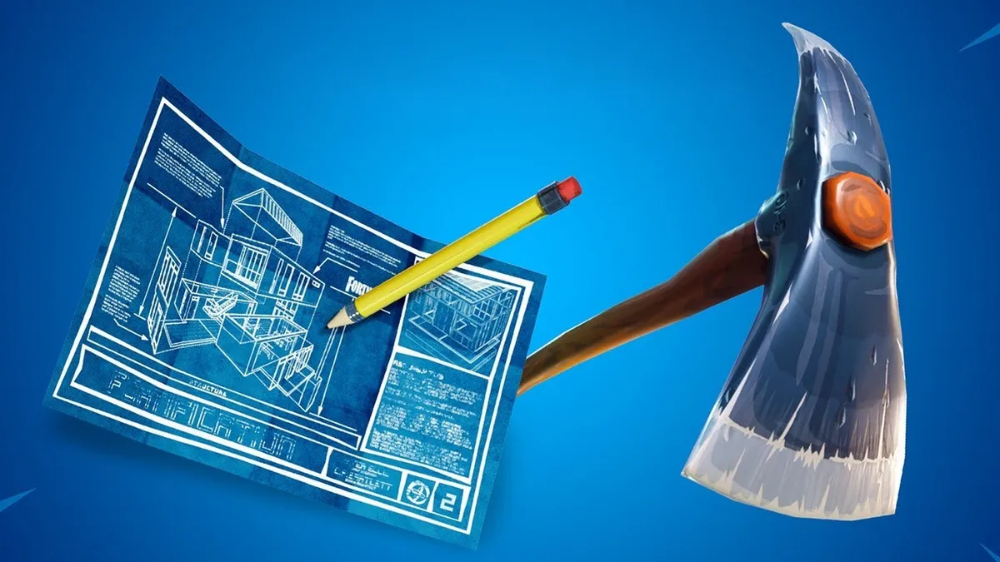
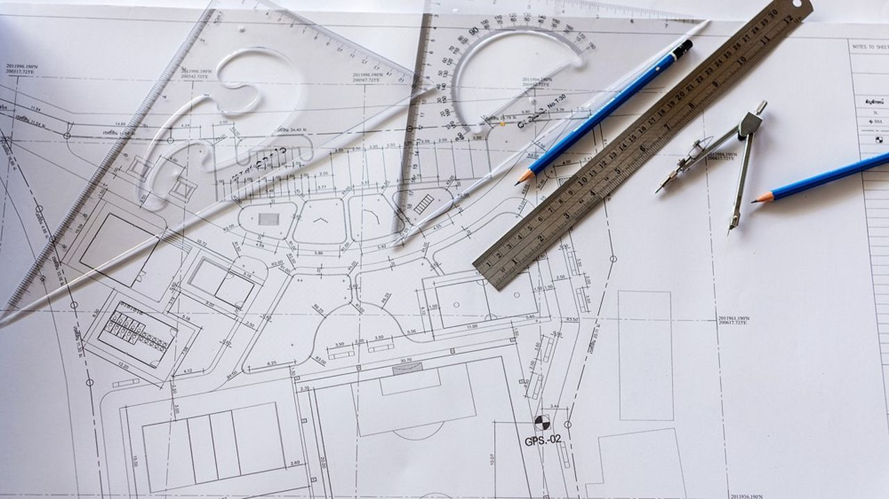
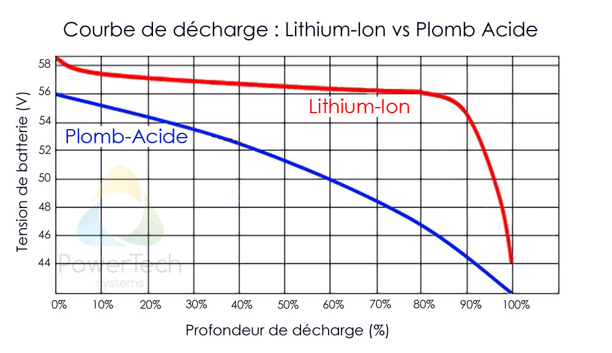
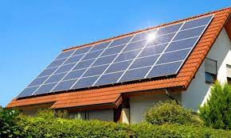

STI2D
Le Baccalauréat Technologique STI2D s'adresse aux personnes intéressées par l'industrie, l'innovation technologique dans le respect de la protection de l'environnement.Il permet de se spécialiser à travers quatre options : Innovation Technologique et Écoconception, Systèmes d'Information et Numériques, Énergie et Environnement, Architecture et construction.
| Contenu de la formation | ||
| Enseignement communs | 1ère | Term |
| Français | 4h00 | |
| Philosophie | 2h00 | |
| Histoire-Géographie | 1h30 | 1h30 |
| Enseignement Moral et Civique | 0h30 | 0h30 |
| L.V.A / L.V.B | 3h00 | 3h00 |
| Enseignement Technologique en Anglais (E.T.L.V.) |
1h00 | 1h00 |
| E.P.S | 2h00 | 2h00 |
| ENSEIGNEMENTS DE SPÉCIALITÉ | ||
| Physique-Chimie et Mathématiques | 6h00 | 6h00 |
| Innovation Technologique (IT) | 3h00 | |
| Ingénierie et Développement Durable (I2D) | 9h00 | |
| Ingénierie, Innovation et Développement Durable (2I2D) |
4h00 | |
| ENSEIGNEMENTS TECHNOLOGIQUES 2I2D AU CHOIX EN TERMINALE (une seule) |
||
| Architecture et Construction (AC) | 8h00 | |
| Energies et Environnement (EE | 8h00 | |
| Innovation Technologique et Éco-conception (ITEC) |
8h00 | |
| Systèmes d'Information et Numérique (SIN) | 8h00 | |
| ACCOMPAGNEMENT PERSONNALISÉ ENSEIGNEMENTS OPTIONNELS |
||
| EPS, Arts, Musique, LV3 | 2h00 | 2h00 |
En SIN, les lycéens étudient les méthodes utilisées pour transmettre de l'information avec le numérique et particulièrement en électronique. À partir de projets, ils explorent toute la chaîne de l'information et proposent des améliorations tant sur l'acquisition des données que leur traitement ou leur restitution sous forme de son, d images...
 Un enseignement de spécialité pour ceux et celles qui aiment innover et concevoir de nouveaux produits industriels en tenant compte de leur impact sur l'environnement mais aussi des contraintes liées aux matériaux et aux procédés de fabrication.
 Pendant cet enseignement de spécialité du Bac STI2D, les lycéens mènent un projet de construction et recherchent les solutions techniques qui respecteront les contraintes d'usage, réglementaires, économiques et environnementales. La partie scientifique et technique devient un outil pour réaliser les différents éléments de ce projet.
 Cette spécialité explore le domaine de l'énergie et sa gestion. Elle apporte les compétences nécessaires pour appréhender l'efficacité énergétique de tous les systèmes intégrant une composante énergétique, leur impact sur l'environnement et l'optimisation du cycle de vie.
 Le brevet de technicien supérieur se prépare en 2 ans après le bac. Pas de dépaysement majeur par rapport à l'année de terminale, mais un accent sur la professionnalisation. En effet, le diplôme correspond à une cible professionnelle précise, répondant aux besoins des entreprises.
Diplôme de niveau Bac+3, le Diplôme Universitaire de Technologie vise la polyvalence et la professionnalisation. Entre cours théoriques en parallèle de nombreux projets tutorés, les DUT sont accessibles directement après le bac et peux mener a une école d'ingénieur
La prépa TSI (technologie et sciences industrielles), destinée aux bacheliers STI2D et STL, vise l'analyse de systèmes complexes et la mise en œuvre de solutions technologiques. Elle prépare aux concours d'entrée et aux admissions sur titre de nombreuses écoles d'ingénieurs.
Chaque année, plus de 40 000 étudiants rejoignent les rangs des écoles d'ingénieurs. À la clé : une formation de niveau bac + 5 en sciences et gestion de projet, un diplôme accrédité sur avis de la CTI (Commission des titres d'ingénieur) et reconnu du monde professionnel, et de belles perspectives de carrière.